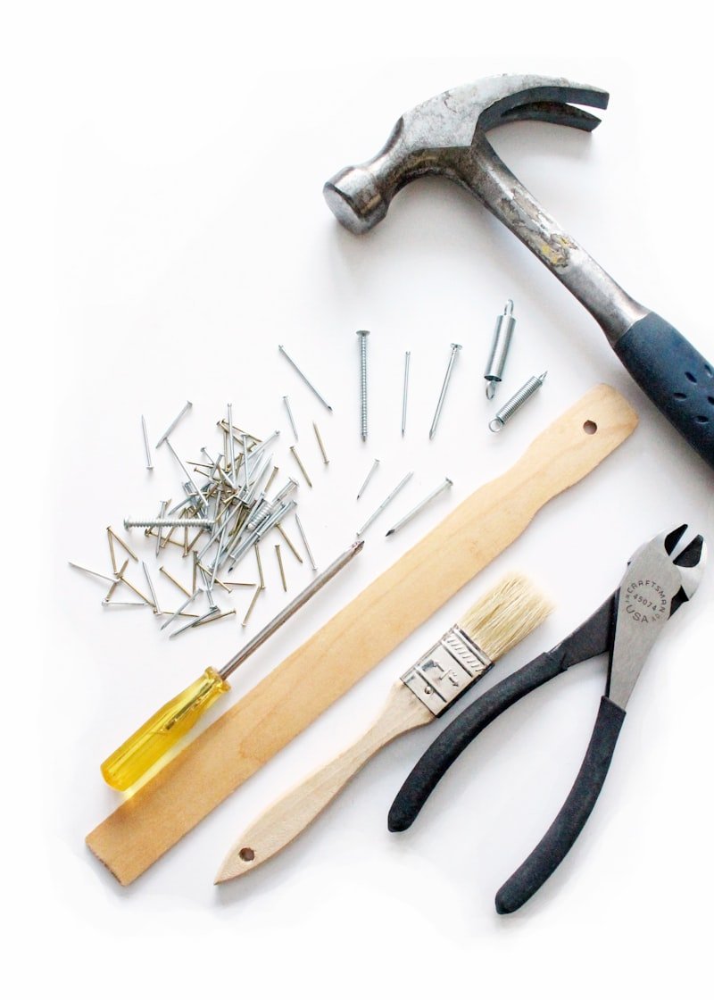

Best Tool Chests & Rolling Cabinets (2026)
A good tool chest is the backbone of any organized garage. It keeps your tools protected, organized, and accessible — and if we're being honest, a big rolling tool cabinet just looks cool. The market has exploded in the last few years, with everyone from Milwaukee to Harbor Freight competing for your money. We cut through the marketing to find which ones actually deliver.
Our rankings prioritize Amazon ratings of 4.5+ with significant review counts, low return rates, and the specs that matter most: drawer slide quality, steel gauge, and overall build construction. A tool chest is a long-term investment — buy right once.

Our Top Picks
Milwaukee 46" 16-Drawer Steel Tool Chest Combo
Milwaukee's 46-inch combo set is the tool chest that made every other brand step up their game. The 18-gauge steel body is tank-like, and the 100-pound rated soft-close ball bearing slides are the best in this price range. Every drawer glides open and closes with a satisfying soft catch — no slamming, no sticking.
The 16-drawer configuration gives you a mix of shallow drawers for hand tools and deep drawers for power tools and bulky items. The integrated power strip with USB charging is a genuinely useful feature — plug in your battery chargers right in the chest. The red powder coat is iconic Milwaukee, and the keyed locking system secures all drawers with a single lock.
Pros
- 4.8 stars with 5,600+ reviews — best rated
- 100-lb soft-close ball bearing slides
- Integrated power strip with USB
- 18-gauge steel construction
Cons
- Premium price point
- Heavy — 230+ lbs empty
Husky 52" 13-Drawer Heavy-Duty Tool Chest Combo
Husky's 52-inch combo gives you more width and nearly the same build quality as Milwaukee at a significantly lower price. The 19-gauge steel is slightly thinner than Milwaukee's 18-gauge, but in practice, you won't notice the difference unless you're really abusing it. The 100-pound ball bearing slides are smooth, though they lack the soft-close feature.
The extra 6 inches of width over the Milwaukee means wider drawers, which is a real advantage for longer tools like torque wrenches and breaker bars. Husky also includes a lifetime warranty on the chest itself, which is hard to beat. The matte black finish is clean and hides scratches well. For the home mechanic who wants professional quality without the professional price tag, this is the sweet spot.
Pros
- 52" width — more room than competitors
- Lifetime warranty
- 7,200+ reviews with 4.6 stars
- Significantly cheaper than Milwaukee
Cons
- No soft-close drawers
- 19-gauge steel (slightly thinner)
US General 44" 13-Drawer Industrial Roller Cabinet
Harbor Freight's US General line has become a cult favorite, and for good reason. The 44-inch roller cabinet uses 18-gauge steel — the same thickness as Milwaukee — at roughly half the price. The ball bearing slides are smooth, the drawers are deep, and the overall build quality has improved dramatically over the last few generations.
The catch? You have to buy it at Harbor Freight (or their website), and availability can be spotty. The drawer liners are basic, and the finish isn't quite as refined as Milwaukee or Husky. But for pure bang-for-buck, nothing touches US General. There's a reason every garage YouTube channel recommends these.
Pros
- 18-gauge steel at half the price of Milwaukee
- 4.7 stars — extremely well reviewed
- Deep drawers for power tools
- Cult following for a reason
Cons
- Only available at Harbor Freight
- Basic drawer liners
- Finish not as refined as premium brands
Craftsman 2000 Series 41" 10-Drawer Tool Cabinet Combo
Craftsman is the name your dad trusted, and the 2000 Series is their current mid-range offering. It's a solid tool chest that does everything adequately without excelling in any particular area. The 20-gauge steel is thinner than Milwaukee or US General, but the build quality is consistent and the red finish is classic Craftsman.
The 10-drawer configuration is fewer than competitors at this price point, which means less organizational flexibility. The ball bearing slides work fine but aren't as smooth as Milwaukee's soft-close units. Where Craftsman wins is brand trust and availability — you can buy these at Lowe's, see them in person, and return them easily if there's an issue.
Pros
- Trusted brand name
- Available at Lowe's for easy returns
- Classic red finish
- Solid mid-range option
Cons
- Only 10 drawers
- 20-gauge steel (thinnest on this list)
- Doesn't stand out in any category

What Actually Matters in a Tool Chest
Drawer Slides
This is the #1 differentiator between a good tool chest and a frustrating one. Ball bearing slides rated for 100+ pounds are the minimum. Soft-close is a luxury but worth it — slamming drawers damages tools and the chest itself. Avoid friction slides entirely.
Steel Gauge
Lower gauge = thicker steel. 18-gauge is professional grade. 19-gauge is excellent for home use. 20-gauge is adequate but will dent more easily. Anything above 22-gauge is too thin for a tool chest.
Drawer Configuration
More drawers means more organization options. A mix of shallow (2-3") and deep (6-8") drawers is ideal. Shallow drawers for hand tools, sockets, and wrenches. Deep drawers for power tools, spray cans, and bulky items.
Casters
Often overlooked but critical. Look for 5" or larger casters with at least two locking wheels. A fully loaded tool chest can weigh 500+ pounds — cheap casters will crack or flat-spot on concrete floors.
The Bottom Line
The Milwaukee 46" is the best overall tool chest if you can stomach the price — the soft-close drawers and build quality are unmatched. The Husky 52" is the best value for most home mechanics. US General is the budget king that punches way above its weight. And Craftsman is the safe, reliable choice if you want to buy in person at Lowe's.